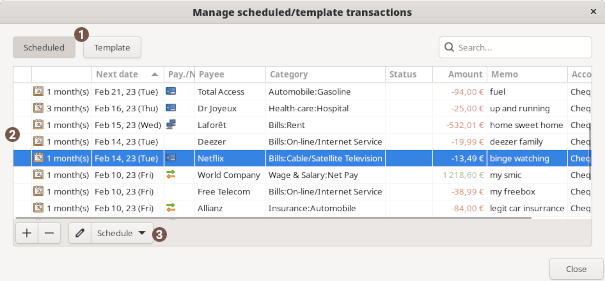

Using Scheduled/Template transactions dialog
 Scheduled/Template switcher
Scheduled/Template switcher
Toggle the list to show only Scheduled or Template
 Scheduled/Template list
Scheduled/Template list
display the list of Scheduled/Template transactions in the wallet.
scheduled transaction are marked with a calendar icon: .
 Buttons
Buttons
| Add | add a new empty template. |
|---|---|
| Delete | delete the active template. |
| Edit | edit the active template. |
| Schedule | display the scheduling option popover of the active template. |
 Scheduled popup
Scheduled popup
| Activate | set this template to be scheduled |
|---|---|
| Next date | specify the date of the next insertion, when you first edit you should set it manually, then it is updated automatically. You can of course adjust it later if needed. |
Recurrence pattern
| Interval |
|
||
|---|---|---|---|
The < specific> day  |
|
||
| Week-end |
define how to manage the post date when it occurs on a weekend:
|
||
| Stop after xx posts | limit the insertion to a finished count |